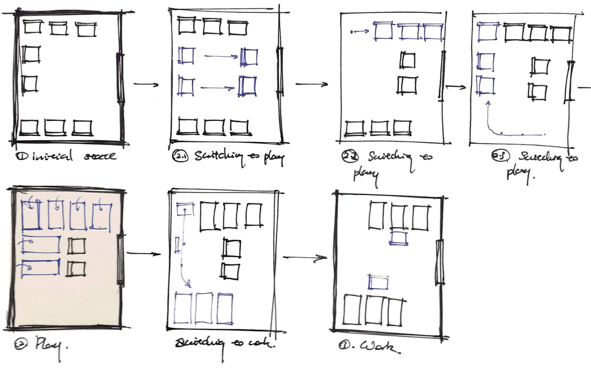

ESPACE
User Experience Design
BACKGROUND
Client : Bridgestone CorporationBridgestone challenged our Tools for UX Design class to explore future trends in the automobile industry in 5 to 10 years and create a prototype geared towards these trends. Our group of three focused on families travelling with children.
MY ROLE
Our group collaborated on the research and then brainstormed together around our individual ideas. I worked on the 3D modeling and animation in addition to creating the final video.DETERMINING A FOCUS AREA

DETERMINING TARGET AUDIENCE
Stakeholder maps
Territory maps
Opportunity Mapping
RESEARCH METHODS
Background research / competitive analysis
In-person interview
Survey
SYNTHESIZING OUR FINDINGS
CATEGORIES FOUND
Factors that affect transportation decisions
Parent’s responsibilities
Transportation method
Time
CLIENT PRESENTATION 1

CONTENT COVERED
Why traveling with children?
What’s the scope of the travel experience?
What we’ve done & moving forwards
BRIDGESTONE FEEDBACK
Liked progression of focus thinking which lead from parenting, to schedule, to relationships.
Don't limit focus
GENERATIVE RESEARCH
RESEARCH ACTIVITIES
Rank Issues
Map Daily Travels
Daily Planner
What would you add to your car
THE PIVOT

RESEARCH ANALYSIS
We picked out key notes and points from each user interview and generative research and plotted them onto an affinity map.
THE PIVOT
Shift focus to children’s perspective
Importance of emotional value and creativity
Creativity in the car
Automobiles as the third space
CLIENT PRESENTATION 2
CONTENT COVERED
Research process so far
Research Analysis
Opportunities
Next steps
FEEDBACK
Great pivot to resist urge to explore "Band aid" solutions
Keep it fun and playful
Don't limit focus just on kids but benefits to adults also
FURTHER RESEARCH
RESEARCH AREAS
Creativity in Children
Designing for Autonomous Vehicle space
RESEARCH METHODS
Parent Interviews
Surveys
Generative research
STORYBOARDS
RESEARCH OPPORTUNITIES
Storytelling
Children are amazing storytellers and spend a lot of time doing it, especially on the road. We also want to explore other potential new forms of creative medium that take forward this idea of encouraging creativity while on the move.
Adaptable Interior Space Design
Current futuristic interior designs concepts do not factor in the needs and priorities of families like safety, proximity seating, etc. Consider ways to make it adaptable as per requirement.
PROTOTYPING

ENVIRONMENTAL INTERACTIONS
We finalized the seat arrangements and produced 3 types of arrangements: default, play and work.
DIGITAL INTERACTIONS
We prototyped 2 digital interactions: the mobile app and the interactive window where the mother and children draw together.
3D EXPLORATION
Different seat and background models were explored to best fit our concept.
CONCEPT IN MOTION
We used 2D animation to better portray the passengers’ interactions with the interior of the vehicle. The interactions focused on are meant to nurture creative development in children and family bonding.
We used 3D animation to better depict the adaptable interior space design. This is meant to support a variety of family activities based on the passengers’ needs.